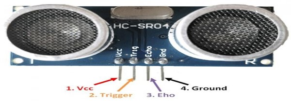
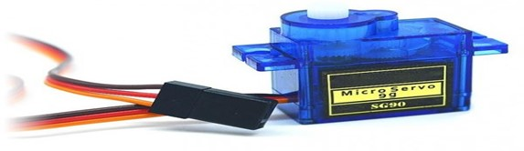
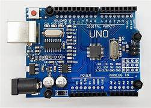
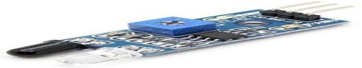
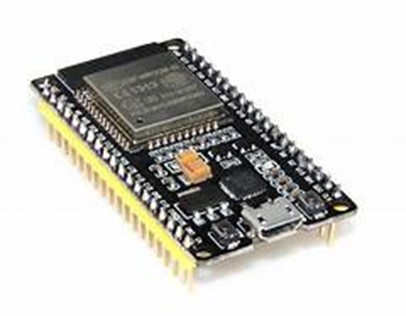
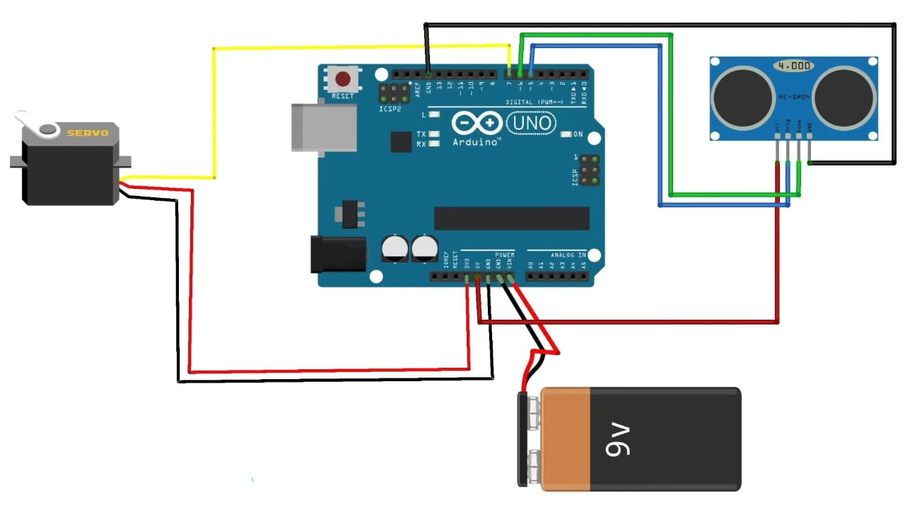
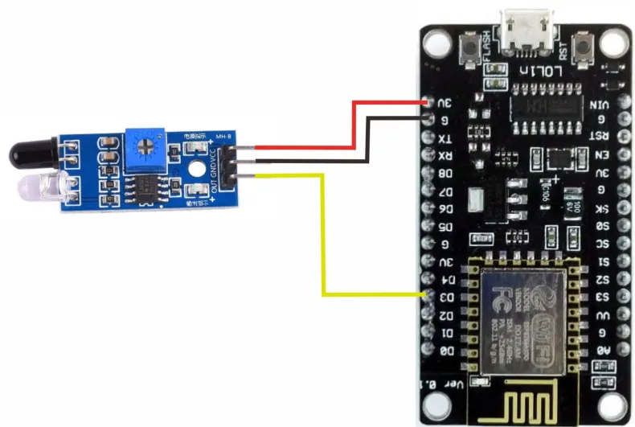

If you are wondering what a smart bin is, then here is your answer! Smart bin is the new high
technology that integrated waste containers with smart sensors, which allows you to track
through the waste management processes. For example, with the smart waste bin system
you can control the occupancy ratio of your smart waste bins. The capability to track the
occupancy ratio of your smart waste bins provides your business with many benefits. It
provides you successful time management in your waste management process. And also, it
helps you with increasing efficiency in your waste management. Your fleet can make the best
choice in an optimized route plan.
Thanks to smart bin technology your business can efficiently manage your waste. So, if you
are wondering about the details of smart bins here, they are! Smart bin sensors are attached
to the dust bins. With that you can manage to track the fullness level of your smart trash bins
efficiently. If you are curious about how the smart bin sensors work the answer is gateways.
They are the link between sensors and the IoT (Internet of Things) platform. At that point, you
can ask what IoT is. Basically, IoT ensures your business to access real-time data. So that you
can track the location of your waste truck fleet or the location of your smart bins anytime you
want. With gateway technology, the data collected from the smart bin sensors are sent to the
cloud. So that you can easily track your business’s waste management process. They provide
assistance in optimization of the most efficient route that includes only the smart bins that
are full and need to be emptied.
Moreover, these devices generate smart schedules for your waste truck drivers and they
manage your waste in the most effective way.
Step 1: Components Required
1. Ultrasonic Sensor
Measures distance using sound waves, emitting pulses and calculating distance based on echo reception.
2. Servo Motor
Precise motor that rotates to specific angles, controlled by sending electrical signals for position adjustment
3. Arduino
Open-source microcontroller platform enabling prototyping and DIY electronics, utilizing a simple coding interface for programming
4. IR Sensor
Detects infrared radiation, often used for proximity sensing, object detection, or remote control signal reception in devices
4. ESP32S
ESP32S is a powerful Wi-Fi and Bluetooth-enabled microcontroller, featuring dual cores and a wide range of connectivity options for IoT applications.
6. Other Components
- USB connectors for charging and power supply.
- Rechargeable battery to power up.
Step 2: Circuit Design and Assembly
 
CONNECTIONS
- Red Pin (Servo Motor) with Arduino 5v
- Black Pin (Servo Motor) with Arduino GND (Ground)
- Orange Pin (Servo Motor) with Arduino Pin 5
- VCC (Sensor) with Arduino 5v
- Trig (Sensor) with Arduino Pin 10
- Echo (Sensor) with Arduino Pin 11
- GND (Sensor) with Arduino GND
- IR Sensor VCC pin → ESP32 3.3V or 5V pin
- IR Sensor GND pin → ESP32 GND pin
- IR Sensor Analog Output pin → ESP32 Analog Pin (e.g., A0)
Servo Motor SG-90
Ultrasonic Sensor
IR Sensor